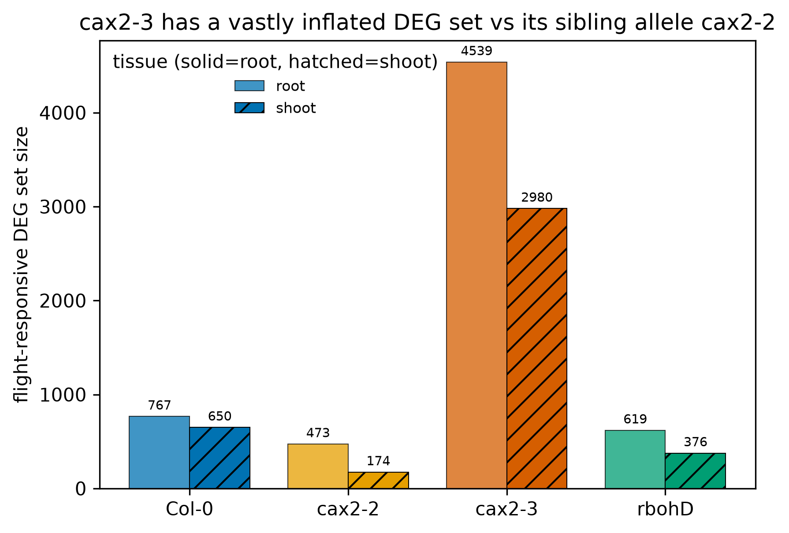
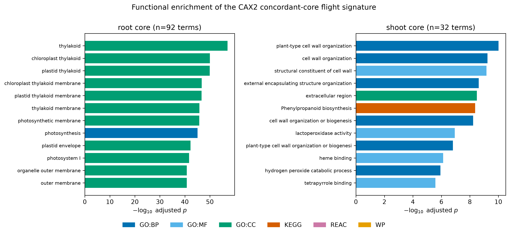
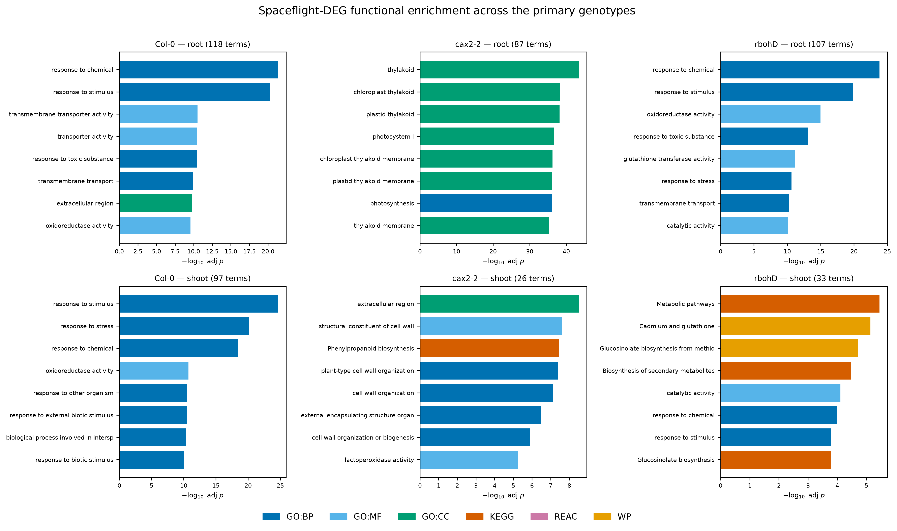

Spaceflight imposes a unique combination of microgravity and space-radiation
stress on plants, yet the signalling pathways that translate the orbital
environment into altered growth remain incompletely mapped. The Advanced Plant
Experiment-05 (APEX-05) flew four Arabidopsis thaliana genotypes — wild-type
Col-0, a mutant in reactive-oxygen (ROS) production (rbohD), and two
independent alleles of the calcium/H⁺ exchanger CAX2 (cax2-2 and cax2-3)
— aboard the International Space Station, alongside
matched ground controls, and profiled both the shoot and root transcriptome
(RNA-seq) and root system architecture (RSML morphometrics). A QC concordance
test between the two CAX2 alleles found cax2-3 strongly discordant with its
sibling cax2-2 (DEG set ~10–17× inflated and no more similar to cax2-2 than to
unrelated genotypes); cax2-3 was therefore excluded, leaving a primary set of
three genotypes (Col-0, cax2-2, rbohD). Wild-type rosette
leaf area was reduced under spaceflight [TO CONFIRM: exact means/CI from the
leaf-area analysis; storyboard indicates ~4.0 cm² ground control vs ~2.7 cm²
flight], and this response was altered in the ROS- and calcium-signalling
mutants, implicating both pathways in the spaceflight growth response.
Differential-expression analysis identified hundreds of flight-responsive genes
in each genotype and tissue (e.g. Col-0 root: 799 DEGs, 268 flight-induced / 531
flight-repressed; see Table 1 and the direction note in §2), enriched for
photosynthesis, stress-response, cell-wall and redox pathways (Fig. 9;
results/tables/apex05_primary_enrichment_*). Beyond the biology, we release APEX-05 as a
FAIR, reproducible data package and demonstrate a machine-learning
quality-control workflow that (i) recovers tissue identity from expression with
100% leave-one-out accuracy and detects deliberately mislabelled samples at ~97%
recall, and (ii) shows that day-4 primary-root morphology only weakly
distinguishes these subtle mutants — the finding that motivated our provenance-
based correction of a historical cax23 sample-labelling anomaly. Together the
data and tooling provide a reusable resource for the plant space-biology
community.
APEX-05 — Arabidopsis spaceflight transcriptomics, root architecture & ML sample QC
A FAIR, reproducible data-and-code package comparing four Arabidopsis thaliana genotypes flown on the ISS against matched ground controls — paired shoot/root RNA-seq and RSML root-architecture morphometrics, with a machine-learning quality-control layer.
Headline: wild-type and rbohD mount a strong spaceflight response localised to the outer root (epidermis, cortex, gravity- sensing columella); cax2-2 abolishes the transcriptional response (CAX2 required) yet its roots still shorten — uncoupling expression from growth.
Abstract
Highlights
4 genotypes × 2 tissues × 2 conditions
Col-0, cax2-2, cax2-3, rbohD; root & shoot; spaceflight vs ground control.
ML sample QC
100% leave-one-out tissue recovery; ~97% recall detecting injected label-swaps.
CAX2 allele concordance
cax2-3's flight-DEG set is 10–17× inflated and discordant with its sibling allele — excluded on QC grounds.
Functional signatures
Root core → photosynthesis; shoot core → cell wall + peroxidase; rbohD → redox/detox.
Selected figures



Data & code
- Manuscript & legends: rendered here ·
source in
manuscript/ - Data:
data/(metadata, expression, morphometrics, gene sets) - Analysis code:
analysis/(R pipelines + Python ML/enrichment) - Results:
results/(tables, plots, ML outputs) - Provenance: cax2-3 mislabelling record